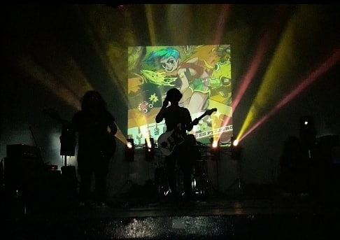
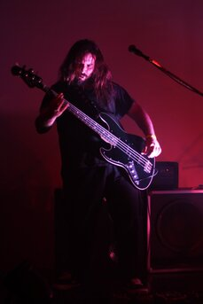
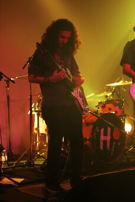

-Bienvenidxs al Sitio Oficial de Müfff-

En este sitio podrás descubrir y enterarte de:
- Las noticias y novedades de la banda.
- Nuestra historia y como nos formamos.
- Acceso a nuestra discografia.
- Letras de nuestros temas.
- Material audiovisual de Videoclips oficiales y recitales.
- Y mucho mas!
Müfff esta compuesto por:

Cristian "Manteca" Fabrizio. Voz y Guitarra, 25 años, oriundo de ituzaingó, fuertemente influenciado por el Shoegaze

Fernando "Fieldy" Aguirre. Bajo y coros, 28 años, oriundo de castelar, influencias en alternativo e industrial.
Dante Eliseo Marengo. Bateria y coros, 26 años, oriundo de ituzaingo, influencias en alternativo y stoner.

Juan Cruz Diaz Fernandez. Guitarra, 25 años, oriundo de ituzaingo, influencias en el stoner rock y rock clasico.